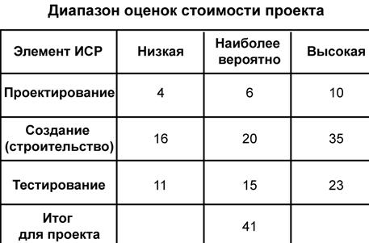
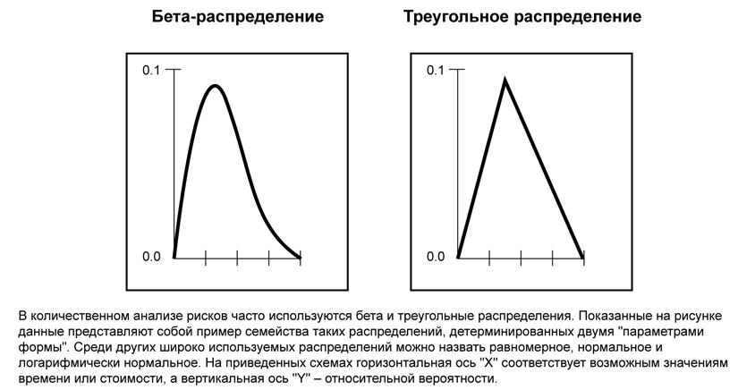
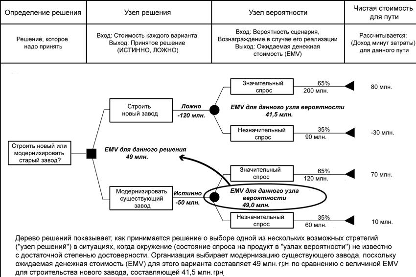
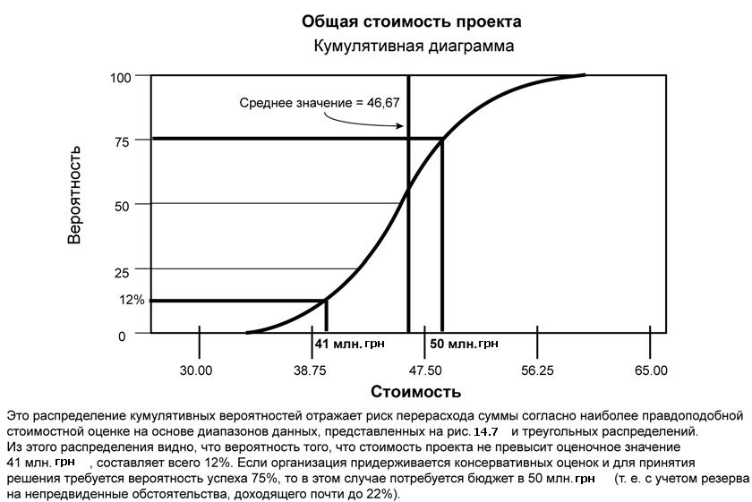

Количественный анализ рисков(п.11.4, рис.14.1)
Количественный анализ производится в отношении тех рисков, которые в процессе качественного анализа рисков были квалифицированы как потенциально или существенным образом влияющие на конкурентоспособные свойства проекта. В процессе количественного анализа рисков оценивается эффект от таких рисковых событий и таким рискам присваивается цифровой рейтинг. Данный анализ также представляет количественный подход к принятию решений в условиях неопределенности. В ходе этого процесса используются такие методы, как моделирование Монте-Карло и анализ дерева решений; они используются для:
- Определения количества возможных выходов проекта и степени их вероятности.
- Оценки вероятности достижения конкретных целей проекта.
- Идентификации рисков, требующих наибольшего внимания, путем количественной оценки их относительного вклада в общий риск проекта.
- Определения реалистичных и достижимых целей по стоимости, расписанию или содержанию с учетом рисков проекта.
- Определения лучшего решения по управлению проектом в ситуации, когда некоторые условия или выходы остались неопределенными
Количественный анализ рисков обычно выполняется после качественного анализа рисков, хотя опытные менеджеры проектов иногда проводят количественный анализ сразу после идентификации рисков. В некоторых случаях для разработки эффективных ответных мер реагирования на риски, проведение количественного анализа рисков не требуется. Выбор метода (методов) анализа в каждом конкретном проекте определяется наличием времени и бюджетом, а также потребностью в качественной или количественной констатации рисков и их последствий. Чтобы определить насколько успешно (и успешно ли) снизился общий риск проекта, после планирования реагирования на риски необходимо провести повторный количественный анализ рисков, а также часть мониторинга и управления рисками. Анализ трендов может указать на необходимость проведения большей или меньшей по масштабу операции по управлению рисками. Это является входом процесса планирования реагирования на риски.
11.4.1 Количественный анализ рисков: входы
11.4.1.1 Активы организационного процесса. Информация о предыдущих, схожих с текущим проектах, результаты изучения схожих проектов специалистами по рискам и базы данных рисков, которые могут быть доступны из промышленных или частных источников.
11.4.1.2 Описание содержания проекта см. п. 5.2.3.1.
11.4.1.3 План управления рисками Для количественного анализа рисков существенны следующие элементы плана управления рисками:
1) распределение ролей и ответственности в управлении рисками, бюджетом и плановыми операциями по управлению рисками;
2)категории рисков;
3) иерархическая структура ресурсов;
4) уточненная толерантность к риску участников проекта.
11.4.1.4 Реестр рисков. Ключевыми элементами реестра рисков для количественного анализа рисков являются: список идентифицированных рисков, относительное ранжирование или список приоритетов рисков проекта, а также риски, сгруппированные по категориям.
11.4.1.5 План управления проектом включает в себя:
- План управления расписанием проекта устанавливает формат и критерии для разработки и контроллинга расписания проекта.
- План управления стоимостью проекта устанавливает формат и критерии для планирования, структурирования, оценки, разработки бюджета и контроллинга расходов проекта.
11.4.2 Количественный анализ рисков: инструменты и методы
11.4.2.1 Методы сбора и представления данных.
- Опросы используются для количественной оценки вероятности наступления и воздействия рисков на цели проекта. Требуемая информация зависит от используемого типа вероятностного распределения. Например, для некоторых широко используемых моделей распределений надо собрать информацию об оптимистическом (низкий), пессимистическом (высокий) и наиболее вероятном сценарии, а для других моделей - информацию о средних и стандартных отклонениях.
Примеры оценок по трем точкам для стоимостной оценки показаны на рис. 14.6.
Документирование обоснований ранжирования рисков является важным компонентом опросов по рискам, поскольку эти документы могут содержать информацию о надежности и достоверности анализов.

Рисунок 14.6 - Диапазон стоимостных оценок проекта по результатам опроса по рискам
- Распределение вероятностей. Непрерывное распределение вероятностей представляет собой неопределенность значений, например, продолжительность плановых операций и стоимость элементов проекта.Для представления неопределенных событий может использоваться дискретное распределение, например, результаты испытаний или возможный сценарий дерева решений.
На рис. 14.7 представлены два примера широко используемых непрерывных распределений. Эти асимметричные распределения описывают такие формы, которые сочетаются с данными, обычно получаемыми в результате анализа рисков проекта. Равномерное распределение можно использовать в тех случаях, когда между указанными верхней и нижней границей нет предпочтительных значений, что бывает, например, на ранней стадии проектирования.

Рисунок 14.7 - Примеры широко используемых вероятностных распределений
- Экспертная оценка. Эксперты в этой области, как являющиеся сотрудниками организации, так и привлекаемые со стороны (например, эксперты в области инженерии или статистики), подтверждают правильность данных и методов.
11.4.2.2 Методы количественного анализа рисков и моделирования.
Наиболее распространенными методами количественного анализа являются:
- Анализ чувствительности помогает определить, какие риски обладают наибольшим потенциальным влиянием на проект. В процессе анализа устанавливается, в какой степени неопределенность каждого элемента проекта отражается на исследуемой цели проекта, если остальные неопределенные элементы принимают базовые значения. Один из типичных способов отображения результатов анализа чувствительности - это диаграмма торнадо, которая полезна при сравнении относительной важности переменных, обладающих высокой степенью неопределенности, с другими, более стабильными переменными.
- Анализ ожидаемой денежной стоимости (ОДС) - это статистическое понятие, при помощи которого рассчитывается средний результат для случаев, когда будущее включает в себя сценарии, которые нельзя с уверенностью предсказать (т. е. анализ в условиях неопределенности). Обычно ОДС благоприятных возможностей выражается в положительных величинах, а риски - в отрицательных величинах. Расчет ОДС производится путем умножения значения каждого возможного результата на вероятность его появления, а затем полученные значения суммируются. Чаще всего такой тип анализа используется в анализе дерева решений (рис. 14.8). Для анализа рисков стоимости и расписания рекомендуется применять моделирование, так как этот метод более эффективен и менее подвержен вероятности неправильного применения, чем анализ ожидаемой денежной стоимости.
- Анализ дерева решений. Обычно структура анализа дерева решений строится на основе диаграммы дерева решений (рис. 14.8), которая описывает рассматриваемую ситуацию с учетом каждой из имеющихся возможностей выбора и возможного сценария. Она объединяет стоимость каждой возможности выбора, вероятность возникновения каждого возможного сценария, а также вознаграждения за каждый альтернативный логический путь. Построение дерева решений дает возможность провести анализ ОДС (или иные мероприятия, представляющие интерес для организации) по каждой альтернативе при условии, что все вознаграждения и соответствующие решения уже имеют количественное выражение.

Рисунок 14.8 - Диаграмма дерева решений
- Моделирование и имитация. При моделировании проекта используется модель для определения последствий от воздействия подробно описанных неопределенностей на результаты проекта в целом. Моделирование обычно проводится с помощью метода Монте-Карло. При моделировании модель проекта рассчитывается множество раз (итеративно), при этом входы рандомизированы из функции распределения вероятности (например, стоимость элементов проекта или продолжительность плановых операций), выбранной для каждой итерации из распределения вероятности каждой переменной. Рассчитывается распределение вероятностей (например, общая стоимость или дата завершения).
При анализе стоимости рисков в качестве модели при моделировании можно использовать традиционную ИСР (п. 5.3.3.2) или иерархическую структуру стоимости. Для анализа рисков расписания используется диаграмма, построенная по методу предшествования (п. 6.2.2.1). Результаты моделирования стоимостных рисков представлены на рис. 14.9.

Рисунок 14.9 - Результаты моделирования стоимостных рисков
11.4.3 Количественный анализ рисков: выходы
11.4.3.1 Реестр рисков (обновления). Формирование реестра рисков начинается в процессе идентификации рисков (п. 11.2), а в процессе качественного анализа рисков (п. 11.3) происходит его обновление. Дальнейшее обновление реестра рисков происходит во время количественного анализа рисков. Реестр рисков является компонентом плана управления проектами. Обновлению подлежат следующие основные элементы:
- Вероятностный анализ проекта. В процессе вероятностного анализа проекта производится оценка потенциальных выходов расписания проекта и стоимости, составляется перечень контрольных дат завершения и стоимости, а также данной информации присваиваются соответствующие уровни конфиденциальности. Этот выход, обычно выражаемый в виде распределения кумулятивных вероятностей, используется вместе с толерантностью к риску участников проекта для количественной оценки стоимостной и временной составляющих резерва на непредвиденные обстоятельства. Такие резервы на непредвиденные обстоятельства необходимы для сведения до приемлемого для организации уровня риска перерасхода по отношению к заявленным целям проекта. Например, на рис. 14.9 стоимость непредвиденных обстоятельств 75-го процентиля составляет 9 грн., или около 22% по сравнению с суммой 41 грн, которая получается по оценкам наибольшей вероятности.
- Вероятность достижения целей по стоимости и времени. Когда проект сталкивается с рисками, при помощи результатов количественного анализа рисков можно оценить вероятность достижения целей проекта на фоне текущих плановых показателей. Например, на рис. 14.9 вероятность достижения стоимостной оценкой в 41 грн (рис. 11-10) равна примерно 12%.
- Список приоритетных оцененных рисков. В этот список включены риски, которые представляют наибольшую угрозу или наилучшие благоприятные возможности проекту. Среди них имеются риски, которые требуют максимальных средств на непредвиденные обстоятельства и те, которые обладают наибольшей степенью вероятности оказать влияние на критический путь.
- Тренды результатов количественного анализа рисков. По мере проведения повторных анализов, тренды могут становиться все более очевидными, а это может способствовать принятию решений, влияющих на реагирование на риски.